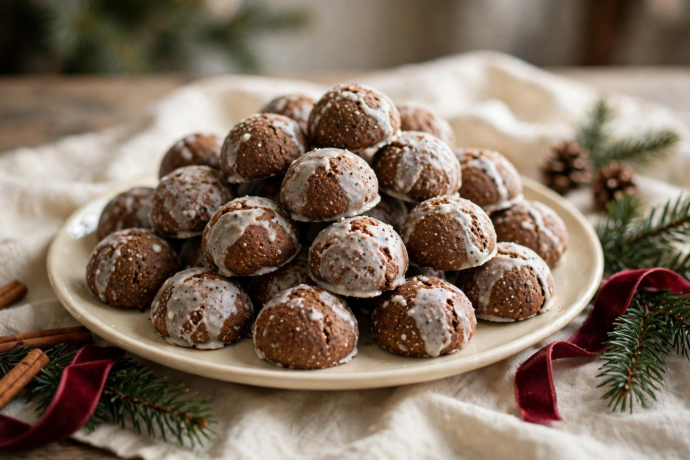

Start › Plätzchen
Plätzchen Rezepte
Ob Vanillekipferl, Zimtsterne oder Butterplätzchen zum Ausstechen: Hier findest du die beliebtesten Plätzchen Rezepte – einfach erklärt, gelingsicher und von Anna getestet.
 Top 10
Top 10Die 10 besten Plätzchen Rezepte 2026
Unsere beliebtesten Weihnachtsplätzchen in einer Sammlung.
 Klassiker
KlassikerVanillekipferl wie von Oma
Zart, mürbe und mit echter Vanille – der Klassiker schlechthin.
 Klassiker
KlassikerZimtsterne einfach selber machen
Saftiger Kern, weiße Glasur – so gelingen sie garantiert.
 Grundrezept
GrundrezeptButterplätzchen zum Ausstechen
Das Grundrezept – ideal zum Backen mit Kindern.
 Klassiker
KlassikerSpritzgebäck wie von Oma
Zarte Stangen, Kränze und S-Formen aus der Gebäckspritze.
 Schnell gemacht
Schnell gemachtKokosmakronen – saftig & einfach
Nur wenige Zutaten, außen knusprig, innen saftig.
 Mit Gelee
Mit GeleeSpitzbuben mit Johannisbeergelee
Mürbeteig-Sandwiches mit Johannisbeergelee und Puderzucker.
 Mit Nüssen
Mit NüssenEngelsaugen (Husarenkrapfen)
Zarte Plätzchen mit fruchtiger Gelee-Füllung.
 Extra mürbe
Extra mürbeHeidesand – zarter Sandteig
Feiner Sandteig, der auf der Zunge zergeht.
 Hingucker
HinguckerSchwarz-Weiß-Gebäck im Schachbrettmuster
Das hübsche Schachbrettmuster aus hellem und dunklem Teig.
 Frankfurter Klassiker
Frankfurter KlassikerBethmännchen – Frankfurter Klassiker
Der Frankfurter Klassiker aus Marzipan und Mandeln.

WürzigPfeffernüsse – würzig & weich
Würzig, weich und mit feiner Zuckerglasur.
 Gewürzplätzchen
GewürzplätzchenSpekulatius selber machen
Knusprig und voller Weihnachtsgewürze.
 Mit Honig
Mit HonigWeiche Lebkuchen mit Schokoglasur
Weich, würzig und mit Schokoglasur ein Gedicht.
 Nürnberger Art
Nürnberger ArtElisenlebkuchen – der edle Klassiker
Der edle Nürnberger Klassiker auf Oblaten.
 Mini-Stollen
Mini-StollenStollenkonfekt – Stollen in Mini
Stollen-Geschmack in kleinen, feinen Häppchen.
 Mit Füßchen
Mit FüßchenAnisplätzchen – fein & aromatisch
Fein, aromatisch und wunderbar leicht.
 Zart schmelzend
Zart schmelzendSchneeflöckchen – zart & pudrig
So zart, dass sie auf der Zunge schmelzen.
 Mit Walnuss
Mit WalnussWalnussplätzchen – nussig & mürbe
Nussig, mürbe und herrlich aromatisch.
 Mit Schoko-Enden
Mit Schoko-EndenMandelhörnchen mit Schokolade
Marzipan-Hörnchen mit Schokoladen-Enden.
 Knusprig
KnusprigHaferflockenplätzchen – knusprig & schnell
Knusprig, schnell gemacht und immer beliebt.
Ohne EiPlätzchen ohne Ei – 5 Rezepte
Kein Ei im Haus? Diese 5 Rezepte gelingen trotzdem perfekt.
Annas Plätzchen-Tipp
Die besten Plätzchen entstehen ohne Hektik: Teig immer gut kühlen, den Ofen nie zu heiß stellen und die Dose erst öffnen, wenn die Plätzchen ganz ausgekühlt sind. So bleiben sie wochenlang mürbe und lecker.
Mehr über AnnaAnnas Bücherregal
Manche Rezepte stehen in keinem Blog, sondern in den Backbüchern, die Anna seit Jahren begleiten. Im neuen Bereich Kochbücher stellt sie ihre liebsten Backbücher vor – vom Klassiker „Backen macht Freude“ bis zur veganen Backschule.
Zu den Kochbüchern